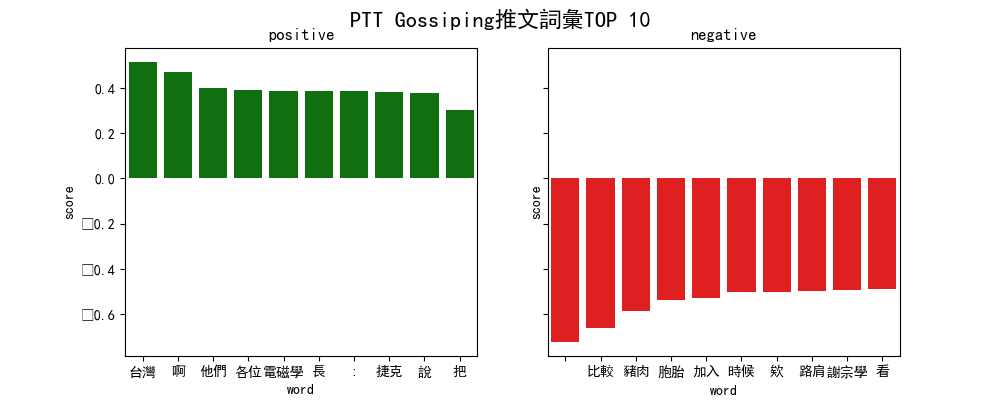

這次的練習就稍微複雜一點，使用的是機械學習常用的工具scikit-learn，一樣是朝著可視化的目標前進，所以也會做張圖…
這次的主要步驟大概如下：
首先準備好環境
pip install jieba sklearn pandas seaborn matplotlib
使用"結巴"進行分詞
延續前面的範例檔案，先來回顧一下爬回來的json中，裡面的key為何
import json
with open('pttgossip.json') as f:
posts = json.load(f)
print(posts[100].keys())
#dict_keys(['title', 'author', 'date', 'content', 'comments', 'score', 'url'])
print(posts[100]['comments'][0].keys())
#dict_keys(['user', 'score', 'content'])
接下來利用"結巴分詞"來分斷個別貼文的詞並計數，並把結果append到一個list內，分數也比照辦理
import jieba
import json
from collections import defaultdict
with open('pttgossip.json') as f:
posts = json.load(f)
seg_posts = [] #處理過的貼文列表
p_scores = [] #分數列表
for post in posts:
words = defaultdict(int) #初始化dict
content = post['content']
if post['score'] != 0:
for line in content.split('\n'): #以行為單位分詞
if line:
for word in jieba.cut(line):
words[word] += 1
if len(words) > 0:
seg_posts.append(words)
p_scores.append(1 if post['score'] > 0 else 0)
也使用同樣的思路處理每篇貼文的回覆
seg_comments = []
c_scores = []
for post in posts:
for comment in post['comments']:
words = defaultdict(int)
line = comment['content'].strip()
if line and comment['score'] != 0:
for word in jieba.cut(line):
words[word] += 1
if len(words) > 0:
seg_comments.append(words)
c_scores.append(1 if comment['score'] > 0 else 0)
到這裡為止，資料是初步處理完了
使用scikit-learn進行線性預測
接下來要處理的就是學習的部分了，照這次實作的題目來說的話，這階段也就是常聽到的"Word2vec”，基於接觸過後學習才會比較有概念，這邊直接進入操作，以後有機會再深入探討…
首先把剛才收集來的資料用以下方式處理
from sklearn.feature_extraction import DictVectorizer
...
dict_vec = DictVectorizer(sparse=False)
x_posts = dict_vec.fit_transform(seg_posts)
print(dict_vec.feature_names_) #列出column
[' ', '!', '"', "'", '(', ')', '+', ',', '-', '--', '-----', '.', '..', '...', '....', '......', '/', '0.025', '00', '000', '01', '02', '05', '07', '08', '09', '0966', '1', '1%', '1.27', '10', '10.8', '100', '1000', '100P', '108', '11', '112', '118', '12', '125', '130', '13000', '131', '14', '15', '16', '160', '163', '166', '17', '170', '18', '180', '1912', '1947', '1984', '1990', '1993', '2', '20', '2008', '2009', '2014', '2017', '2018', '2019', '2020', '2022', '21', '2203', '23', '24', '27', '28', '29', '3', '3.1', '30', '31', '318', '36', '3c', '4', '4%', '484', '5', '50', '5000', '54088', '55', '550', '56', '57', '577', '59', '6', '60', '686', '7', '700', '719', '78%', '8', '80', '800', '817', '88', '8809', '89', '9', '90', '95', ':', '<', '=', '>', '?', '@', 'A', 'ABC', 'AID', 'ASUS', 'Adhanom', 'Asus', 'BE', 'BUT', 'Berliner', 'CNN', 'CT', 'CTWANT', 'Christmas', 'D', 'Dcard', 'Dr', 'E', 'ETtoday', 'EUV', 'Eats', 'FB', 'GG', 'GOOGLE', 'Get', 'Ghebreyesus', 'Global', 'H', 'HEAD', 'HMD', 'I01WD', 'I7', 'IG', 'Ich', 'JKF', 'JPTT', 'Judy', 'K', 'KMT', 'Keanna', 'LINE', 'LISTLESS', 'Like', 'Milos', 'MoneyDJ', 'N', 'N950F', 'N9750', 'NEWS', 'NO', 'No.1', 'Nokia', 'Note', 'N年', 'O', 'OL', 'P', 'PASS', 'PO', 'PREPARED', 'PS', 'PTT', 'Party', 'Petrof', 'Prima', 'Q', 'REFUSE', 'Redmi', 'Reuters', 'SM', 'Samsung', 'Sent', 'So', 'T', 'T295', 'TVBS', 'Taiwan', 'Tedros', 'Tvbs', 'U', 'UDN', 'UPUPUP', 'Uber', 'VPN', 'WHO', 'Wiki', 'Xiaomi', 'Yahoo', 'YahooTV', 'YouTube', 'Youtube', 'Zeman', '_', 'a', 'air', 'awkward', 'bed', 'big', 'bin', 'can', 'checks', 'cm', 'code', 'com', 'cos', 'cosplay', 'cot', 'csc', 'd', 'day', 'depressed', 'ein', 'engineer', 'ex', 'force', 'from', 'good', 'have', 'help', 'iPhone', 'leave', 'marz', 'my', 'neal', 'o', 'on', 'one', 'p', 's', 'sec', 'set', 'sex', 'show', 'sin', 'some', 'source', 'swag', 'ta', 'tan', 'to', 'want', 'when', 'wifi', 'wreck', 'x', 'you', 'your', 'youtube', 'yt', '~', '’', '…', '′', '‵', '─', '│', '┌', '┐', '○', '\u3000', '、', '。', '《', '》', '「', '」', '『', '』', '【', '】', '〔', '〕', 'う', 'お', 'さ', 'で', 'と', 'め', 'ゆ', 'り', 'ァ', 'エ', 'シ', 'ノ', 'ル', 'ヴ', '・', 'ㄉ', 'ㄙ', 'ㄛ', 'ㄟ', '一', '一一', '一下', '一中', '一事', '一些', '一人',....
print(x_posts) #查看轉換後的資料
'''
[[0. 0. 0. ... 0. 0. 0.]
[2. 0. 0. ... 0. 0. 0.]
[7. 0. 0. ... 0. 0. 0.]
...
[0. 0. 0. ... 0. 0. 0.]
[0. 0. 0. ... 0. 0. 0.]
[0. 0. 0. ... 0. 0. 0.]]
'''
變得有接近目標的樣子了
為了畫圖，再使用TfidfTransformer產生特徵向量
from sklearn.feature_extraction.text import TfidfTransformer
from sklearn.feature_extraction import DictVectorizer
...
dict_vec = DictVectorizer(sparse=False)
tfidf_tf = TfidfTransformer()
x_posts = tfidf_tf.fit_transform(dict_vec.fit_transform(seg_posts))
print(x_posts)
'''
(0, 5466) 0.3164131590857888
(0, 5428) 0.26977341604814975
(0, 5071) 0.29198209629586447
(0, 4921) 0.26977341604814975
(0, 4913) 0.2540161066463822
...
'''
回覆的部分也比照辦理，並且使用LinearSVC（Linear Support Vector Classification，線性支援向量分類)進行處理，
兩個在一起的話大概像這樣
from sklearn.feature_extraction.text import TfidfTransformer
from sklearn.feature_extraction import DictVectorizer
from sklearn.svm import LinearSVC
...
p_dict_vec = DictVectorizer(sparse=False)
p_tfidf_tf = TfidfTransformer()
p_x = p_tfidf_tf.fit_transform(p_dict_vec.fit_transform(seg_posts))
p_svc = LinearSVC()
p_svc.fit(p_x, p_scores)
c_dict_vec = DictVectorizer(sparse=False)
c_tfidf_tf = TfidfTransformer()
c_x = c_tfidf_tf.fit_transform(c_dict_vec.fit_transform(seg_comments))
c_svc = LinearSVC()
c_svc.fit(c_x, c_scores)
print(p_svc.coef_[0])
'''
[-0.72464228 -0.45262722 0.21239902 ... -0.12832172 -0.12832172
-0.12832172]
'''
使用Pandas製作DataFrame
讓資料變得簡單可用的過渡步驟，這部分比較單純一點，就是利用Pandas來把剛才處理好的資料做成一個DataFrame表格，首先放上column name，做成一個空的DataFrame
import pandas as pd
p_df = pd.DataFrame(columns=['score', 'word'])
print(p_df)
'''
Empty DataFrame
Columns: [score, word]
Index: []
'''
接者把剛剛LinearSVC完成的資料放進來，回覆也比照辦理
import pandas as pd
...
p_df = pd.DataFrame(columns=['score', 'word'])
p_df['score'], p_df['word'] = p_svc.coef_[0], p_dict_vec.feature_names_
c_df = pd.DataFrame(columns=['score', 'word'])
c_df['score'], c_df['word'] = c_svc.coef_[0], c_dict_vec.feature_names_
print(p_df)
'''
[5475 rows x 2 columns]
score word
0 -0.724645
1 -0.452623 !
2 0.212401 "
3 0.143647 '
4 0.095657 (
... ... ...
5470 -0.128321 ｉ
5471 -0.128321 ｎ
5472 -0.128321 ｓ
5473 -0.128321 ｔ
5474 -0.128321 ｙ
'''
DataFrame提供了很多便利的操作，能更快速的整理資料，而這次實作單純只用到排序
....
print(p_df.sort_values(by='score'))
'''
score word
0 -0.724642
3259 -0.661204 比較
4633 -0.585509 豬肉
4208 -0.539002 胞胎
1174 -0.530751 加入
... ... ...
5218 0.389572 電磁學
1412 0.392787 各位
728 0.399305 他們
1529 0.471990 啊
1394 0.515951 台灣
'''
print(p_df.sort_values(by='score', ascending=False))
'''
[5475 rows x 2 columns]
score word
1394 0.515951 台灣
1529 0.471990 啊
728 0.399305 他們
1412 0.392787 各位
5218 0.389572 電磁學
... ... ...
1174 -0.530751 加入
4208 -0.539002 胞胎
4633 -0.585509 豬肉
3259 -0.661204 比較
0 -0.724642
'''
使用seaborn進行可視化
前一篇已經使用matplotlib了，這次就搭配seaborn，已經儘量簡化了看起來還是有點繁瑣…
import seaborn as sns
import pandas as pd
from matplotlib import pyplot as plt
def show_chart(data, top_n, sup):
fig, (ax1, ax2) = plt.subplots(ncols=2, sharey=True) #建立兩張並排
p = sns.barplot(x='word', y='score', data=data.sort_values(by='score', ascending=False)[:top_n], color='green', ax=ax1) #正向分析圖
n = sns.barplot(x='word', y='score', data=data.sort_values(by='score')[:top_n], color='red', ax=ax2) #負向分析圖
p.set_title('positive') #正向分析標題
n.set_title('negative') #負向分析標題
#fig.set_size_inches(18.5, 10.5) #有需要的話用來調整尺寸
plt.suptitle('PTT Gossiping%s詞彙TOP %s' % (sup, top_n), fontsize=16) #副標題
plt.rcParams['font.sans-serif'] = ['simhei'] #指定中文字體，否則會無法顯示
plt.show()
記得PTT的回覆是叫推文來著？總之接下來就能輸出圖片啦
show_chart(p_df, 10, '本文')
show_chart(c_df, 10, '推文')
能力不足做不出漂亮圖片…

完成的notebook放在這裡可直接觀看喔
收工！